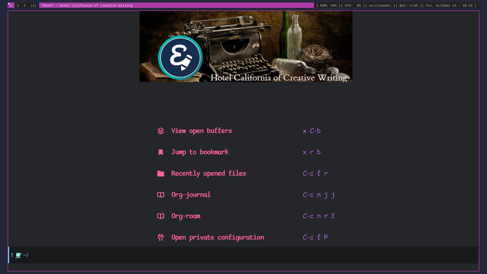
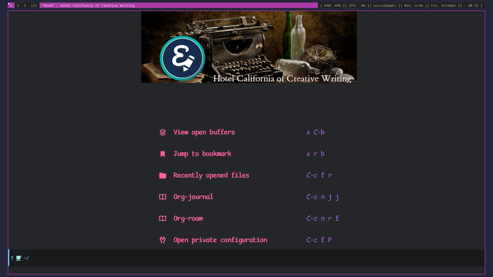

Hotel California of Creative Writing
This is the home page
This is the home page
This is a detailed explanation of why Emacs is my Hotel California of creative writing. It shows how I have created a writing environment exactly how I want it to be, and why there—in my mind—is nothing out there that compares to it.
Perhaps when you think of Emacs, you think of it as a text editor and an Integrated Development Environment (IDE).
It is my hope that, after reading this article, that you start thinking of it as an Integrated Writing Environment (IWE) as well.
“I use emacs, which might be thought of as a thermonuclear word processor… the engineer-hours that, in the case of Microsoft Word, were devoted to features like mail merge, and the ability to embed feature-length motion pictures in corporate memoranda, were, in the case of emacs, focused with maniacal intensity on the deceptively simple-seeming problem of editing text. If you are a professional writer… emacs outshines all other editing software in approximately the same way that the noonday sun does the stars. It is not just bigger and brighter; it simply makes everything else vanish.”
-Neal Stephenson, 1998 (In the Beginning… Was the Command Line - Wikipedia)
I can make Emacs fit my workflow rather than the other way around.
Emacs is a LISP machine.
It’s highly recommended to run Emacs without any customization a couple of times to learn how the basic Emacs commands work. We can do that by running Emacs with the Q command-line argument, like this: emacs -Q. If you want—again, highly recommended—you can run the Emacs Tutorial by running C-h t. Do the tutorial until you feel confident. Also, experiment in the Scratch buffer, like in the video tutorial above.
Common Emacs commands:
C-x C-f : find-file, allows you to open an existing file. If the file doesn’t exist, create a new file.C-x C-s : save-buffer, saves buffer to disk.C-x b : ibuffer, show a list of buffers in the minibuffer, and allows you to switch to a different buffer.C-x C-b : ibuffer, runs ibuffer in a new window (use q to quit).C-x k : kill (close) buffer.C-x C-c : quit Emacs.C-o : org-open-line : inserts new line below point.C-x 2 : split window in two, one below another.C-x 3 : split window in two, side-by-side windows.C-x o : switch to other window.C-x 0 : close window.C-x 1 : close other windows.C-<space> : toggle the mark.C-w : kill (cut) text between point and mark. (‘w’ is for “wipe”).M-w : (copy) save region, but don’t kill it. (‘w’ is for “wipe”)C-y : yank (paste) first item from the kill-ring.M-y : display items in the kill-ring to yank (paste) into the buffer.To get out of trouble, use C-g (keyboard quit) to cancel whatever it is that Emacs is doing at the moment. Use C-x C-c to rage-quit if you need to (I admit that I have when I first started out). C-x u will undo, and C-? will redo. Use C-x C-s to save current buffer. If the current buffer is a horrible mess, you can run M-x revert-buffer to get back to whatever it was when you loaded it from disk (by doing a C-x C-f). Also, sometimes you will want to toggle a file read-only. You can do that by pressing x C-q.
Press C-h to view a list of options to get help. Especially useful is C-h k when you want to know what a keyboard command does without running it first. For example, pressing C-h k <F4> will tell you that it runs the command kmacro-end-or-call-macro. Press q to close the help window.
If you want to read a comprehensive—very much so—guide to Emacs, the history, and the details of how it works, read my massive Creative writing with Emacs blog post from 2019. It delves into the mechanics of Emacs in much more depth, leaving us free to explore Emacs as a writer’s toolbox. So, if you are completely blank with regard to Emacs, I highly recommend that you read at least the first part of it before continuing.
And, before you ask, let me tell you my favorite Emacs command: C-o (insert new line below); I use it all the time!
Now that you know a thing or two about Emacs, here’s another introductory video about Emacs as a text editor:
NB: He uses the <Esc> key as an alternative to <Control> like in <Esc> y. May I suggest that you use C-y instead. Using the Escape key that way will conflict with the modal editing package Boon mentioned below./
Doom-Emacs is a minimalist modern Emacs distribution that is light and fast. It provides a rock-solid and highly configurable infrastructure to base an Emacs configuration on.
I switched to Doom-Emacs after declaring Emacs Bankruptcy 1, and I haven’t regretted it. It uses every trick in the book to optimize, and the install/upgrade/maintenance scripts are excellent. It provides infrastructure and a well thought out framework for creating your own, speedy Emacs configuration.
If you feel that you need to have at least a menu-bar, then you can turn it on/off by running this command: M-x menu-bar-mode. It can be useful sometimes, especially when learning the Emacs ropes.
When your InitFile gets so large that you really need to start over, then you have declared “.emacs bankruptcy”. EmacsWiki: Dot Emacs Bankruptcy ↩︎
A GNU Emacs major mode for keeping notes, authoring documents, computational notebooks, literate programming, maintaining to-do lists, planning projects, and more — in a fast and effective plain text system.
Org-mode is based on outline-mode which is again based on text-mode, and is both a markup language, an organizer (GTD), and an out-liner, and there are some people who live their entire lives in Org-mode.
Here’s a small demo of Org-mode in action (may I suggest that you turn off the sound for this one): Emacs Org Mode Demo 2021 Here is a nerdy blog post about why Org-mode is a great markup language: Org Mode Syntax Is One of the Most Reasonable Markup Languages to Use for Text
*bold* bold/italic/ italic_underline_ underline~code~ code=monospaced= monospaced# comment anything after a hash sign and a space will not be exportedA heading is one or more asterisks followed by a space and some text.
* heading level 1 heading** heading level 2 heading*** heading level 3 heading, and so on* todo heading a heading with a todo* heading :tag: heading with a tag* heading :tag1:tag2: heading with two tags* heading :@category: heading with a categoryPress C-<Enter> to insert a new heading at the same level as the heading you’re in.
M-<up> and M-<down> will move a heading up and down.
M-<left> and M-<right> will promote/demote a heading.
c n and c p will navigate to next and previous heading, respectively.
c u navigates up to the parent heading, if any.
S-<right> and S-<left> cycles through todo states for a heading, ie from draft to revise to done.
c q can be used to set tags/categories for a heading. (c c also works, when standing on the actual heading)
A list item is a dash (-) followed by a space and some text.
- list item unnumbered list item1 list item numbered list item ()- [ ] list item list item with unchecked check box- [X] list item list item with checked check boxPress C-<Enter> to insert a new list item at the same level as the heading you’re in.
M-<up> and M-<down> will move a list item up and down.
M-<left> and M-<right> will demote/promote a list item.
S-<left> and S-<right> will cycle through different list styles, provided that the point is placed on the list item symbol (by default a -))
#+OPTIONS: toc:nil turns off the insertion of an auto-generated Table Of Contents (TOC) upon export.
You can then use #+toc: headlines 2 to manually insert a table of contents into the document.
[[link][description]] link with description (use c l to insert)[[file:link_to_file]] inline image is a file link without descriptionUse c l to insert a link, or to edit a link. Use c o to open a link.
If the link is a file link to an image, and without a description, it is an inline image. To toggle the rendering of inline images, you can press c <TAB>.
[fn:1: this is an inline, numbered footnote][fn:name: named, inline footnote][fn:: anonymous, inline footnote]For more information about footnotes, see 1
In addition to the standard markup, Org-mode has special blocks. Use C-c C-, to insert a block.
 For example, choosing “comment” as a block type will result in the following being inserted in the document:
For example, choosing “comment” as a block type will result in the following being inserted in the document:
#+begin_comment
#+end_commentThe “verse” block is useful for when you want to have a piece of poetry and not have Emacs mess with the formatting.
Special blocks is a good way to extend the markup, and—of course—you can define your own special blocks.
The :noexport: tag tells Org-mode that the contents—including any children—of a section is not to be exported. Useful for when you keep your work in one single file, including sections for things like research, notes, and character studies.
The :ignore: tag instructs Org-mode to export the contents of a heading section, but not the heading itself. That’s useful when we organize your outline/document in chapters and scenes, but don’t want the exported text to be partitioned with scene headings. Having the text partitioned using headings allows us to rearrange those sections of the document—promoting, demoting, moving up and down—and we wouldn’t be able to do that if the text was not organized in an outline. Or, put another way: the :ignore: tag allows us to keep the outline to ourselves.
In Org-mode tables are made of ASCII characters, but it feels like magic in action.
Using Emacs episode 54 - Org Tables
See Tables (The Org Manual) for more details.
We’ll see more of what Org-mode tables can do later on in this article, when discussing clock-tables and when discussing Org-tracktable
Boon is a modal editing package for Emacs that is ergonomic and designed to integrate well with existing Emacs infrastructure. That means that we can continue to use the standard Emacs keyboard shortcuts should we choose to do so, in addition to the features that Boon provides.
Boon is designed so that the right hand takes care of movement, and the left hand do the actions. And great care is taken to ensure that the fingers never leave the home row. Important for touch typists!
Boon is a modal editing system with two modes: Command mode and Insert mode. Command mode is the default mode, and where we perform movement and commands. Insert mode is the mode where the keyboard inserts letters as we type them (as opposed to perform commands).
When in Command mode, we can switch to Insert mode by pressing v. The cursor changes shape and color to indicate that we are indeed in Insert mode. For convenience, pressing S-v will insert a line above the current line and place the cursor in it, and C-v will insert a line below. That often saves us from a couple of keystrokes.
In Insert mode, we can exit it by pressing <Esc> or C-;. The cursor changes back to normal shape and color to indicate that pressing keys will no longer insert letters but perform commands. I’ve bound boon-quit to C-; because <Esc> is not on the home row, even if we rebind it to <Caps Lock>, a fairly common thing to do. The combination of v and C-; means that we don’t have to move our fingers at all, even when switching between the two modes at speed. Ergonomics is important.
C-x and C-c shortcuts are handled in Boon so that any command starting with C-x is simply x, and C-c C- shortcuts are just c.
Not all commands work as you would expect, however, so if we wanted to run find-file (C-x C-f) we will have to press x C-f, and not x f (set-fill-column). That’s because set-fill-column normally uses the shortcut C-x f, and there is no way to make a distinction between the two, find-file or set-fill-column. Luckily, there aren’t many exceptions like this.
Here’s how the keyboard layout looks like for Command mode using Boon:

The right-hand side of the keyboard is dedicated to moving around while the left-hand side is dedicated to issuing commands.
k l i o are equivalent to the four arrow keys. k moves backward by one character, l moves forward by one character. i moves up by one line, o moves down by one line.
The keys j ; moves by word: j backward by word, ; forward by word.
u moves to the beginning of the line, p takes you to the end of the line.
By using the SHIFT key, we can move by sentence: K moves backward by sentence, L moves forward. Similarly, I and O move by paragraph.
You can jump several steps at once by using a number prefix. For example, 5 i will move up five lines, 8 j will move back eight words.
The largest jumps are provided by < and > and will move to the beginning and end of the buffer, respectively.
For convenient navigation we can use h to jump (hop) to a character. For example, if we wanted to navigate to the word ”character”, we could enter h c and all occurrences of c is highlighted:

Now, if we press g we will land on ”character”.
v
quote
Deleting text is mostly done with d. It takes an argument which can be either a movement command or a region specifier.
When deleting a word under the cursor we are often left with an annoying extra space. We can avoid that by using the select-with-spaces modifier, v, when deleting a word. So, instead of d w to delete a word, we can do d v w to delete the word and the extra space.
We can kill and switch to insert state at the same time by using the replace command, r instead of d. It works exactly like d except that it enters into insert mode. It is a convenience that saves you from having to press v after d.
Often, it is useful to be able to replace a single character, and t is used for that purpose. Simply place the point on the character to replace and press t followed by the replacement character.
Another typical character replacement is change of case. The ` key toggles between title, upper, and lower case.


Use C-c t f to toggle flycheck.
The Vale syntax checker will not check inside headings tagged with noexport. Outside of the noexport sections we can use these comments to turn Vale off and on:
This is checked by Vale.
# vale off
This is not going to be checked by Vale.
# vale on
This is checked by Vale.If we are working with an org-mode file that we don’t want to be checked by Vale we can write a configuration file that does not use any styles, called .vale.ini and place it at project root:
StylesPath = /path/to/vale-styles
MinAlertLevel = warning
[*]
BasedOnStyles =

Typopunct is a package that enables us to simply write regular ASCII single and double quotes and have them automatically be converted into typographical quotes.
For example, typing 'quoted' will result in ‘quoted’, and "double-quoted" will result in “double-quoted”.
If we want to actually write a regular ASCII single or double quote, we need to use quoted-insert, which is bound to C-q, like this: C-q " to insert an ASCII ".
Note: some exporters, like the Hugo exporter, will automatically convert regular ASCII quotes to typographical quotes, unless you wrap them in code tags (~).
Additionally, typopunct also allows us to insert en-dash and em-dash by typing -- for – and --- for —.
To insert special characters enter C-x 8 RETURN:
 Now, instead of pressing return, we can conveniently insert an often used character by pressing that key.
For example,
Now, instead of pressing return, we can conveniently insert an often used character by pressing that key.
For example, C-x 8 o will insert a degree symbol: °.
| code | character | code | character | code | character |
|---|---|---|---|---|---|
| C-x 8 C | © | C-x 8 R | ® | C-x 8 $ | ¤ |
| C-x 8 Y | ¥ | C-x 8 + | ± | C-x 8 . | · |
| C-x 8 L | £ | C-x 8 d | § | C-x 8 P | ¶ |
| C-x 8 c | ¢ | C-x 8 m | µ | C-x 8 o | ° |
| C-x 8 x | × | C-x 8 ? | ¿ | C-x 8 a < | ← |
| C-x 8 a - | ¯ | C-x 8 a = | ↔ | C-x 8 a > | → |
| C-x 8 N o | № | C-x 8 2 + | ‡ | C-x 8 ~ = | ≈ |
| C-x 8 _ > | ≥ | C-x 8 _ < | ≤ | C-x 8 1 + | † |
| C-x 8 / / | ÷ | C-x 8 / = | ≠ | C-x 8 * ! | ¡ |
| C-x 8 * * | • | C-x 8 * E | € | C-x 8 * + | ± |
| C-x 8 * . | · | C-x 8 3 / 4 | ¾ | C-x 8 1 / 2 | ½ |
| C-x 8 1 / 2 | ½ | C-x 8 ` e | è | C-x 8 ~ n | ñ |
| C-x 8 " " | ¨ | C-x 8 " u | ü | C-x 8 ’ o | ó |
| C-x 8 , , | ¸ | C-x 8 , c | ç | C-x 8 / a | å |
| C-x 8 / e | æ | C-x 8 / o | ø | C-x 8 ’ ' | ´ |
| C-x 8 ^ i | î |
Use C-x 8 C-h to see a list of available characters that can be typed this way. You might have to run Emacs without any customization, emacs Q, in order to be able to enter the command.
See also Emacs: Unicode Tutorial
x a l : add local abbrev
x a g : add global abbrev
x a i l : add local inverse abbrev
x a i g : add global inverse abbrev
Use C-q SPACE to insert a literal space after a abbreviation instead of expanding it.
Registers in Emacs is a bit like a clipboard where we can store not only text, but also numbers, positions in a buffer, window and frame configurations, rectangles, and bookmarks.
All registers, except bookmark registers, are not persisted between Emacs sessions, and they can be named using single characters, that is upper and lower case letters, numbers, and symbols.
x r SPACE : save position in a buffer to a register.
Use c x j to jump to saved buffer position.
x r s : copy region to register.
Use x r i to insert the contents of a register.
x r w : save window configuration to register.
Use c x j to “jump” to a saved window configuration.
Bookmarks are special buffer position registers that are persisted (saved) between Emacs sessions, and can be named using strings rather than single characters.
x r m : set bookmark.
x r b : jump to bookmark.
x r l : show bookmark list.
Click the Bookmark Menu in the status bar to see what commands are available.
Use q to close the bookmark list buffer.

c x i to clock in. c x o to clock out. c x q to cancel a clock.
There is also the option of starting a 20 minute Pomodoro session, by pressing B.
 Clocking is tied to the heading you are working under, and will add a `:LOGBOOK:` section to it, like this:
Clocking is tied to the heading you are working under, and will add a `:LOGBOOK:` section to it, like this:
:LOGBOOK:
CLOCK: [2017-04-10 Mon 15:16]--[2017-04-10 Mon 15:17] => 0:01
CLOCK: [2017-04-07 Fri 16:05]--[2017-04-07 Fri 16:35] => 0:30
CLOCK: [2017-04-05 Wed 16:42]--[2017-04-05 Wed 16:52] => 0:10
:END:We can generate clock report table by executing C-c l c R or M-x org-clock-report.
The following will be inserted at point, depending on the logbooks in the current document:
#+BEGIN: clocktable :scope subtree :maxlevel 2
#+CAPTION: Clock summary at [2022-10-23 søn 09:56]
| Headline | Time |
|------------+------|
| *Total time* | *0:41* |
|------------+------|
#+END:A clocktable can be configured, for example, to show time clocked until now, like this:
#+BEGIN: clocktable :maxlevel 3 :scope file :block untilnow Time clocked today:
Time clocked today:
#+BEGIN: clocktable :maxlevel 3 :scope file :block todayTime clocked yesterday:
#+BEGIN: clocktable :maxlevel 3 :scope file :block yesterdayTo update a clocktable, simply place the point somewhere in the BEGIN line, and press c c.
For more on clocking time, see Clocking time with Org-mode.
Often when writing, our progress can’t always be measured in words, so time spent is a good alternative.
Using org-wc.

Column view is a good way to view properties of headers. While we can view todo status, categories, tags, time logged, and other standard properties, we can add our own, custom properties, and this is where it gets real interesting for creative writers.
We can easily add properties to a heading by running C-c C-x p:

Now we can configure the COLUMNS special property, which will be inherited by child headings:

See Org column view tutorial for details.
Having set it all up, we can now run org-columns by pressing c x c:

Pres q to exit.
Everything in one big file.
Transclusion.

Sometimes you want to know what changes you have made to a buffer since your last save. Since you haven’t saved the file yet, Magit can’t help you, so you need something else. Fortunately, we can use Emacs’ diff-buffer-with-file, mapped to C-d.

Emacs will ask you for the file on disk, and then open a diff buffer where you can examine the differences. Use x o (o for ‘other’) to go to the diff buffer, if you’re not already in it. Using movement commands, like i o k l, etc. And then, when done, close the buffer by pressing x 0 (zero), or x 1 if you’re not in the diff buffer.

Zotero is used to gather and store and export the citations/references, by the use of the Better-Bibtex plugin.
 After installing Zotero itself, the plugin can be installed by following this guide:
After installing Zotero itself, the plugin can be installed by following this guide:  When the plugin has been successfully installed, it can be set up to automatically export and keep updated the LaTeX formatted Bibtex file that we need in order to use it from Emacs.
When the plugin has been successfully installed, it can be set up to automatically export and keep updated the LaTeX formatted Bibtex file that we need in order to use it from Emacs.
 Choose “file - Export Library”, and choose the `Better BibLaTeX` as the format, and make sure to check the “keep updated” box. When you click “OK” you will be asked where to save the export. For my configuration, I have it as `~/Dropbox/skriv/jacmoe.bib`.
Choose “file - Export Library”, and choose the `Better BibLaTeX` as the format, and make sure to check the “keep updated” box. When you click “OK” you will be asked where to save the export. For my configuration, I have it as `~/Dropbox/skriv/jacmoe.bib`.
To actually populate the bibliography library, I am using the Zotero Firefox connector plugin. I can press a button in Firefox whenever I am visiting a resource.
After all the work with Zotero, we are now ready to use the bibliography from within Emacs. In the file where we want to insert citations, we configure the bibliography file to be used, and configure the export of the citations to use the CSL format:
#+bibliography: ~/Dropbox/skriv/jacmoe.bib
#+cite_export: cslThen, we set a placeholder for where the generated bibliography list will be rendered in the document:
#+print_bibliography:Now that we’re all set up, we can now insert citations into our document by running org-cite-insert (bound to C-c l @)


By running M-x grab-x-link we can insert a link from an active web browser window.
It will ask you to choose your browser—Chromium, Chrome, Firefox, or Brave—and what format to use (plain, markdown or Org format). Much quicker than manually copying, pasting, and write the title manually. The links can be edited by c l , and opened by c o.
Use nov.el to read ebooks.